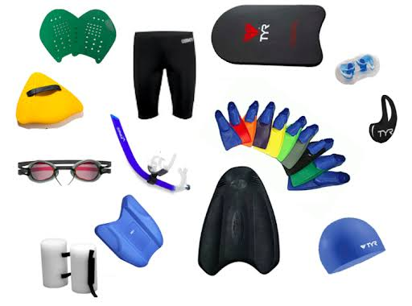

Antigamente, acreditava-se que nadar logo após comer causava congestão fatal instantânea. Hoje sabemos que o esforço pesado desvia o sangue da digestão, causando cãibras ou mal-estar, portanto o repouso leve ainda é a melhor recomendação.
Normas Importantes de Segurança
Perguntas Frequentes sobre Equipamentos
O uso de óculos é obrigatório?
Não é obrigatório por lei, mas altamente recomendado para proteger os olhos contra o cloro ou sal.
Por que usar touca de silicone ou lycra?
A touca protege os cabelos, melhora a hidrodinâmica e evita que fios soltos entrem nos filtros da piscina.
Equipamentos de Natação
